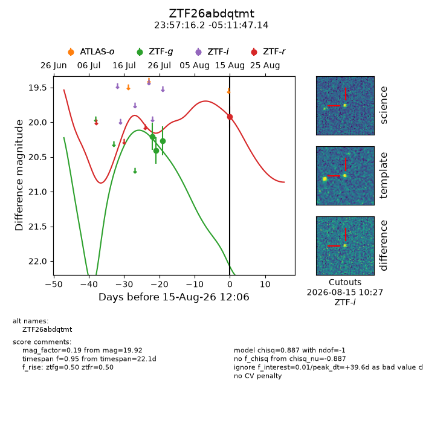
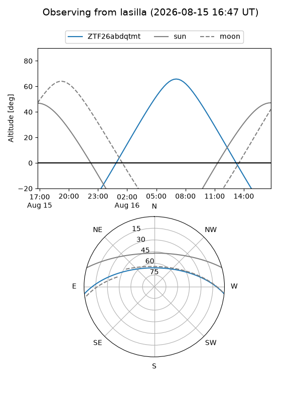
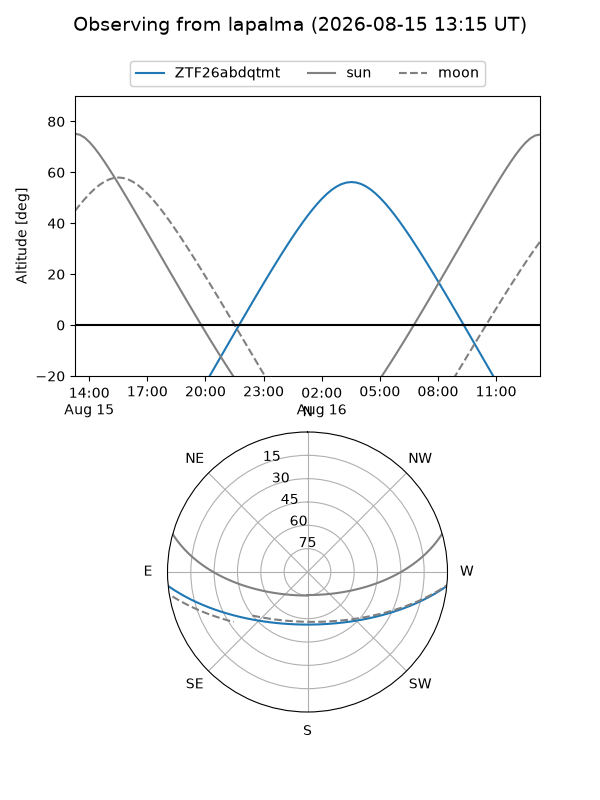
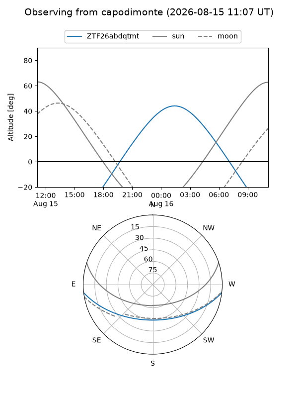
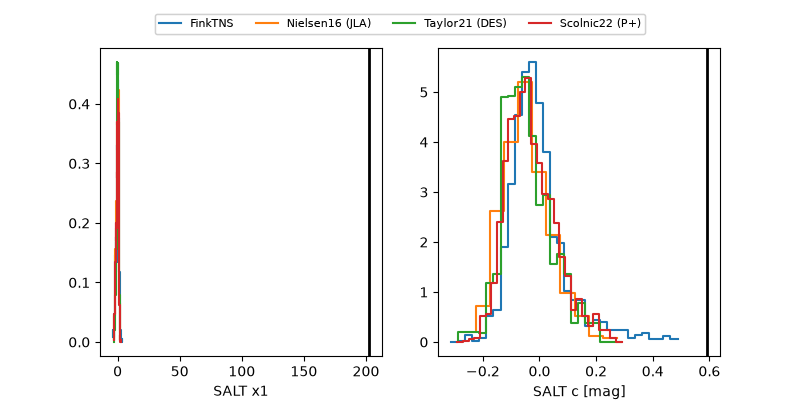

ZTF26abdqtmt
Target ZTF26abdqtmt at 2026-08-15 12:09
Aliases and brokers:
FINK-ZTF: ztf.fink-portal.org/ZTF26abdqtmt
Lasair-ZTF: lasair-ztf.lsst.ac.uk/objects/ZTF26abdqtmt
ALeRCE-ZTF: alerce.online/object/ZTF26abdqtmt
Direct TNS query: direct search
alt names
ZTF26abdqtmt (ztf,fink_ztf)
Coordinates:
equatorial (ra, dec) = 359.3174,-5.19643
equatorial (HMS+DMS) = 23:57:16.17,-05:11:47.14
galactic (l, b) = (90.0616,-64.55355)
Flags:
peak dt: +39.6
Photometry:
last ztfg=20.27, ztfr=19.92
3 ztfg, 1 ztfr detections
Lightcurve

Visibility



Additional plots
